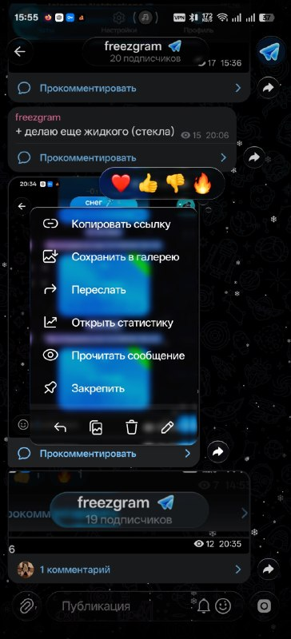
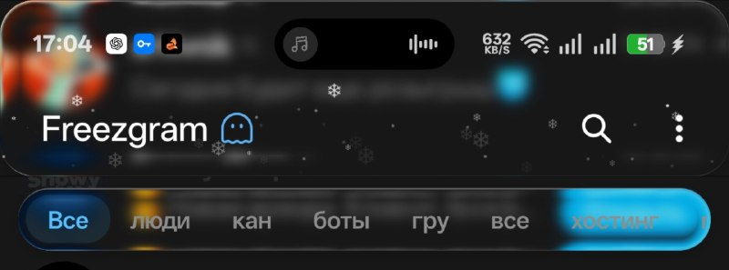

Добавь стекла
Прозрачность, размытие и преломление для шапки чата, навигации и панели ввода.
TELEGRAM ДЛЯ ANDROID
Знакомый Telegram. Больше свободы в деталях.
Стеклянный интерфейс и настройки, с которыми он становится твоим.
Android · ARM64 · Бесплатно

МАЛЕНЬКИЕ ДЕТАЛИ. БОЛЬШАЯ РАЗНИЦА.
Настрой то, что видишь каждый день.
Прозрачность, размытие и преломление для шапки чата, навигации и панели ввода.
Меняй ширину панели навигации, отступы и видимость кнопки контактов.
Значки Freezgram рядом с аккаунтами и каналами сообщества.
LIQUID GLASS
Фон просвечивает сквозь панели, а привычные элементы обретают глубину. Подбери эффект под себя и оцени результат в предпросмотре приложения.
Больше в канале проекта ↗